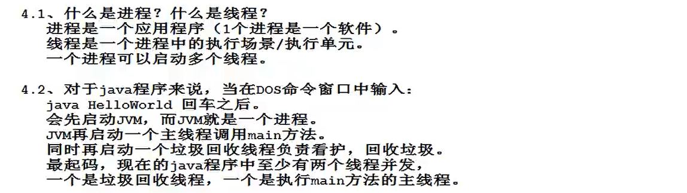
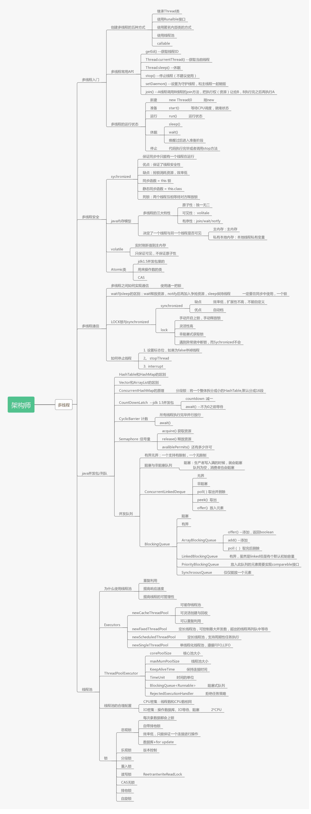

线程三大特性：原子性，可见性，顺序性
什么是进程？什么是线程？

进程和线程的关系：

线程和线程之间

java实现多线程的方式
第一种方式：编写类继承java.lang.Tread,重写run（）方法


注意：
Thread中的run()和static()的区别


第二种方式：编写的类实现java.lang.Runnable接口。


线程的生命周期

Thread thread=new Thread(new Runable(){});
线程默认名字 Thread-线程序号。
thread.setName();//修改线程的名字，
thread.getName();//获取线程的名字
获取当前线程对象 方法static Thread currentThread();
Thread current=Thread.currentThread();
线程的sleep()方法
static void sleep（long millis）
1.静态方法
2.参数是毫秒
3.作用：让当前线程休眠，进入阻塞状态，放弃占有的cpu时间片。
sleep方法的面试题：

注意：run（）方法中的异常只能try catch 不能throws
因为run在父类中没有抛出异常，子类不能比父类抛出更多的异常。
唤醒正在睡眠的线程：
interrupt();
强行终止一个线程：可能会丢失数据。
stop();//已过时，不建议使用。
怎么合理的终止一个线程的执行？
打一个布尔标记
return前可以保存数据。

常见的线程调度模型：
抢占式调度模型；
均分式调度模型；
java采用抢占式调度模型。
java设置线程优先级
void setPriority(int newPriority)
获取线程优先级
int getPriority
最低优先级：1；
最高优先级：10；
默认优先级：5；
优先级高的抢到的CUP时间片相对多一些。
让位方法：
静态方法
static void yield()
暂停当前正在执行的线程对象，执行其他线程。
进入就绪状态， 可以继续抢夺时间片。
实例方法
void join()//合并线程

重点
线程安全问题


什么时候数据在多线程并发的时候会存在安全问题？
1，多线程并发
2，有共享数据
3，共享数据有修改的行为。
java三大变量
实例变量：在堆中；
静态变量：方法区；
局部变量：在栈中；
局部变量没有线程安全问题；（不共享）
静态变量针对所有的改类对象存在线程安全问题。
实例变量是各个对象之间存在线程安全问题。
怎么解决？
线程排队执行，不能并发。这种机制被称为线程同步机制。
synchronized(){
线程同步代码块；
}

同步代码块越小效率越高。
synchronized("adasdas");所有改类的对象都同步；
String s=New String("adasdas");//s要为成员变量
synchronized(s);//同一个对象才会同步。
一般可以写：synchronized(this);
synchronized用在实例方法上，同步整个方法，可能会扩大同步范围，降低程序的执行效率，并且这种方式锁的一定是this，不灵活。
synchronized用在静态方法上，创建的是类锁，其他创建的对象锁，对象锁也锁的是局部（********^_^********）。
synchronized面试题：

下面的代码是 doSome(）被synchronized修饰 doOther没有被synchronized修饰
结果：不需要；
改为doSome(）被synchronized修饰 doOther也被synchronized修饰
结果：需要；（一个对象一把锁）

都被synchronized修饰。
结果：不需要；
改为

结果：需要
这种锁叫排他锁，还有一种互斥锁。
死锁：

class thread1 extends Thread {
Object o1;
Object o2;
thread1(Object o1,Object o2){
this o1=o1;
this o2=o2;
}
run(){
synchronized(o1){
Thread.sleep(1000);
synchronized(o2){
}
}
}
}
class thread2 extends Thread{
Object o1;
Object o2;
thread1(Object o1,Object o2){
this o1=o1;
this o2=o2;
}
run(){
synchronized(o2){
Thread.sleep(1000);
synchronized(o1){
}
}
}
}
public static void main(String[] str){
Object o1;
Object o2;
Thread1 thread1=New Thread1(o1,o2);
Thread2 thread2=New Thread2(o1,o2);
thread1.static();
thread2.static();
}
异步编程模型：
线程t1和线程t2互不干扰，各自执行。
同步编程模型：
线程t1和线程t2，在t1执行的时候，必须等待t2执行结束，
或者t2执行的时候，必须等待t1执行结束，两个线程之间发生了等待关系，线程排队执行。


如果使用局部变量：
建议使用：StringBuilder。
StringBuffer的方法使用synchronized（），会降低执行效率。
ArrayList是非线程安全的；
Vector是线程安全的；
HashMap HashSet是非线程安全的；
Hashtable是线程安全的。
同上。

守护线程：

后台线程
一般是一个死循环，所有的用户线程只要结束，守护线程自动结束，主线程main是一个用户线程。
定时器：
间隔特定的时间执行特定的程序。
java.util.Timer（实现了Runnable接口，可以作为守护线程）

实际开发中，使用Spring框架中的SpringTask框架
timer.schedule(定时任务，第一次执行时间，间隔多久执行一次);
定时任务：继承抽象类TimerTask

第一次执行时间是一个日期对象。
实现线程的第三种方式（JDK8新特性）可以得到返回值。
实现Callable接口

call方法相当于run方法
获取 该线程的返回结果
task.get();//会导致当前线程阻塞，要等待task线程结束
关于Object中的wait和notify方法（生产者和消费者模式）


生产者消费者模式：

//使用wait和notify实现生产者和消费者模式
//wait和notify是所有java对象都具有的
//wait方法作用：o.wait()让o对象上活动的线程t进入等待状态，并且释放t之前占有的o对象的锁
//notify方法作用：o.notify()让o对象上等待的线程唤醒，只是通知，不会释放o对象之前占有的对象锁。
//生产线程
class Producer implements Runnable{
private List list;
public Producer(List list){
this.list=list;
}
public void run(){
while(true){
synchronized(list){//给list仓库加锁
if(list.size()>0){
list.wait();//当前线程进入等待状态，并且释放List集合的锁
}
//生产对象
Object obj=new Object();
list.add(obj);
System.out.println(Thread.currentThread().getName()+"--->"+obj);
//唤醒消费者消费
list.notify();
}
}
}
}
//消费线程
class Consumer implements Runnable{
private List list;
public Consumer(List list){
this.list=list;
}
public void run(){
while(true){
synchronized(list){//给list仓库加锁
if(list.size()==0){
list.wait();//当前线程进入等待状态，并且释放List集合的锁
}
list.remove(0);//消费
//唤醒生产者生产
list.notify();
}
}
}
}
}
}
public static void mian(String[] args){
List list=new ArrayList();
Thread t1=new Thread(new Producer(list));
Thread t2=new Thread(new Consumer(list));
t1.setName("生产者");
t2.setName("消费");
}

